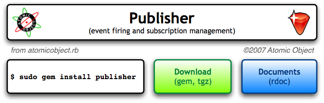

<map name="GraffleExport">
	<area shape=rect coords="14,91,163,108" href="http://atomicobjectrb.rubyforge.org/">
	<area shape=rect coords="485,120,635,187" href="doc/index.html">
	<area shape=rect coords="310,120,463,187" href="http://rubyforge.org/frs/?group_id=4897&release_id=16546">
	<area shape=rect coords="481,91,635,108" href="http://atomicobject.com">
	<area shape=rect coords="21,13,83,75" href="http://atomicobject.com">
</map>

